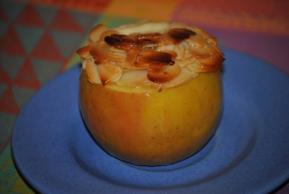

Bienenstich-Apfel

- Zubereitung: ca. 40 Minuten
- Für 4 Äpfel
Zutaten
- 4 Äpfel (Cox Orange)
- 50 g Butter
- 50 g Mandelblättchen
- 30 g Honig
- 150 g Vanillepudding
Zubereitung
- Von den Äpfeln die Deckel abschneiden. Die Äpfel gut aushöhlen und in eine gefettete Auflaufform stellen. Den Ofen auf 180° Celsius (Umluft: 160° Celsius) vorheizen.
- Die Butter mit den Mandelblättchen und dem Honig in einer Pfanne aufkochen lassen. Den Vanillepudding in die Äpfel füllen. Die Mandel-Honig-Masse auf die Äpfel verteilen und etwas andrücken. Die Bienenstich-Äpfel im Ofen ca. 25 Minuten backen.